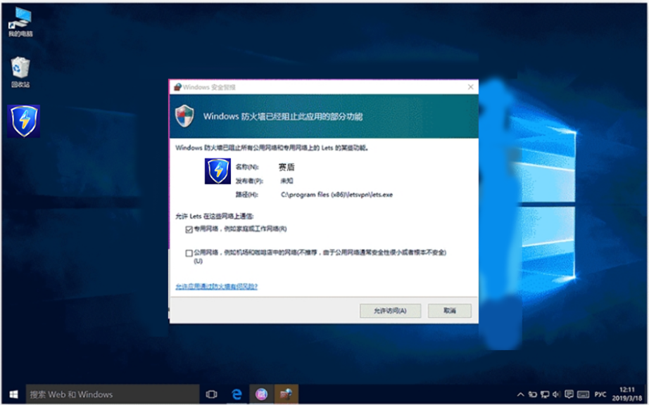
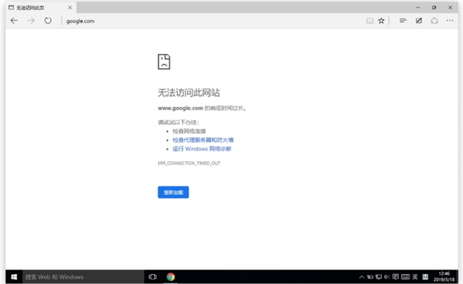
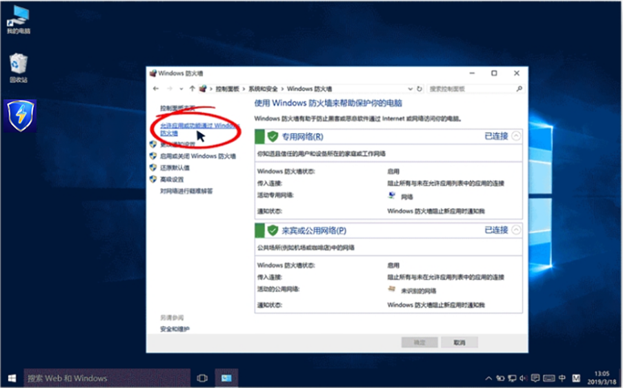
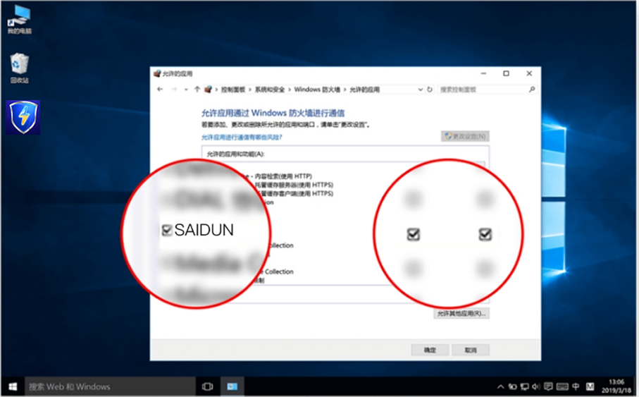

返回
欢迎查看常见问题
智慧服务，让您使用更简单

连接成功后什么网站都无法访问怎么办?
若您连接后，原来能访问的网站也一个都打不开了，就跟断网了一样，这个文章可能帮助您立刻修复这个问题。
赛盾VPN 是一个网络软件，需要您电脑中正常的网络通讯权限。而在 Windows 操作系统中，当我们发起网络访问时，应该有一个类似下图的提醒

在您看到这样的提示时，请您把两个网络通信的选项都勾选上，并且点击“允许访问”按钮，这样赛盾VPN 才能正常工作。
若您点击了“取消”，就会发生如下现象
绝大部分的网站无法访问
·浏览器中访问内容会出现 Time Out 的提示信息;
原来能够访问的也无法正常打开了;

出现这种情况请您不要担心，我们可以重新将 赛盾VPN 设定到 Windows 防火墙白名单中，来修复这个问题。
如何找到防火墙并设置其允许赛盾VPN 通信
不同版本的 Windows 系统防火墙设置相同进入方法不同，下面使用通用的方法给您做一个详细的操作说明。

请按照下面的步骤找到防火墙的位置并对赛盾进行设置!
1.Win+r 之后输入 control 回车
2.右上方查看方式:按类别查看
3.系统和安全
4.Windows 防火墙
5.请点击“允许应用或功能通过 WindowsDefender 防火墙
6.点击更改设置
7.将名称为 赛盾 的应用的选项设置勾选上(包括专用和公用网络)防火墙设置 赛盾VPN 允许通信成功后如下图所示

设置成功后请您重新连接赛盾VPN Windows 软件，然后再访问下您喜欢的网站，看看是否可以正常访问了?
其他情况的处理
若通过上面的方法依然不能有效帮助到您，下面我们列举了一些特别的情况进行说明。
安全软件严重影响连接使用
不同的安全软件针对 VPN 影响越来越严重，例如:腾讯安全管家、360 安全管家、净网大师等建议大家卸载后重启电脑在进行使用。
防火墙设定点击没有反应
按照上面的步骤中，需要您点击“允许应用或功能通过 Windows Defender 防火墙”。但是您可能点击后没有任何的反应。这种情况是 Windows 系统的防火墙本身出现了问题，请您查阅下面的文章进行处理。
如何在 Windows 7 防火墙异常状态下正常工作
使用的是 QQ 浏览器若您使用的是 QQ 浏览器，或者其他中国大陆厂商的浏览器产品(例如:360 浏览器)等，请取消浏览器中一些所谓的安全防护设定。
QQ 浏览器无法打开被墙网站
使用的是 Chrome 浏览器若您使用的是 Chrome 浏览器，请取消浏览器中一些所谓的安全防护设定或者删除理浏览器中自己添加的 VPN 插件。
Chrome 浏览器无法打开被墙网站怎么办
特殊网卡及应用软件的问题
有些网卡或者其他系统硬件的配套软件会有一些网络管理功能，这些功能可能也会引发我们的问题请查阅下面内容
Killer 网卡设置问题导致无法访问这种网卡常见于“外星人”、MS1、Dell、Acer,雷蛇等品牌电脑当中;
Intel Connectivity Service 服务需要进行特殊设置
SmartByte 软件需要进行特殊设置这个软件仅限于Dell 品牌电脑当中
注:若您在下载和使用过程中有任何问题，您随时可以发送邮件给 {{kfEmail}}，将由专业的客户服务人员帮助您获取到最新版本的软件。